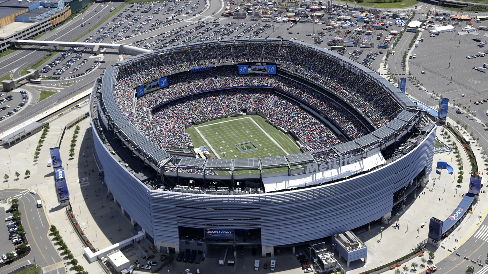
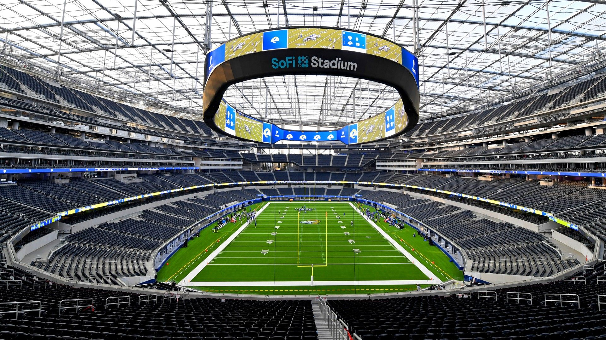

Estadios del Mundial 2026
Los 16 recintos oficiales que albergarán la máxima fiesta del fútbol
🇲🇽 México
3 colosos históricos con gran tradición y pasión futbolera.

Estadio Azteca
Ubicación: Ciudad de México
El legendario templo del fútbol mundial, haciendo historia al recibir su tercer mundial.

Estadio Akron
Ubicación: Guadalajara, Jalisco
Moderno diseño vanguardista rodeado de áreas verdes en el occidente mexicano.

Estadio BBVA
Ubicación: Monterrey, Nuevo León
Imponente recinto con una vista panorámica espectacular hacia el Cerro de la Silla.
🇨🇦 Canadá
2 estadios principales adaptados para recibir el gran torneo norteamericano.

BC Place
Ubicación: Vancouver, Columbia Británica
Recinto multiusos con techo retráctil ubicado en la hermosa costa oeste.

BMO Field
Ubicación: Toronto, Ontario
Estadio especializado en fútbol situado en Exhibition Place, a orillas del lago Ontario.
🇺🇸 Estados Unidos
11 estadios de última generación distribuidos por todo el territorio estadounidense.

MetLife Stadium
Ubicación: Nueva York / Nueva Jersey
El coloso de gran capacidad designado para albergar la gran final de la Copa del Mundo.

SoFi Stadium
Ubicación: Los Ángeles, California
Maravilla arquitectónica futurista equipada con una pantalla circular gigante de doble cara.

AT&T Stadium
Ubicación: Dallas, Texas
Imponente estadio techado con una de las pantallas de alta definición más grandes del mundo.

Mercedes-Benz Stadium
Ubicación: Atlanta, Georgia
Diseño futurista con un techo retráctil único en forma de óculo inspirado en el Panteón romano.

Hard Rock Stadium
Ubicación: Miami, Florida
Moderno recinto al aire libre con cubierta parcial y un ambiente vibrante caribeño.

Lumen Field
Ubicación: Seattle, Washington
Famoso por su increíble acústica y la gran pasión de su afición en el noroeste pacífico.

Levi's Stadium
Ubicación: San Francisco Bay Area, California
Sede altamente tecnológica y sostenible ubicada en el corazón de Silicon Valley.

NRG Stadium
Ubicación: Houston, Texas
El primer estadio de la NFL con techo retráctil y superficie de césped natural móvil.

Lincoln Financial Field
Ubicación: Philadelphia, Pensilvania
Tradicional y moderno escenario deportivo en una de las ciudades más históricas del país.

GEHA Field at Arrowhead Stadium
Ubicación: Kansas City, Misuri
Reconocido históricamente como uno de los recintos con mayor ruido y ambiente de la nación.

Gillette Stadium
Ubicación: Boston / Foxborough, Massachusetts
Epicentro de grandes eventos deportivos ubicado en la región de Nueva Inglaterra.